Apache Sandesha is implemented on top of the current version of Apache Axis. In-order to support the reliable message delivery in web services there are set of new messages that needs to be passed between the parties to the communication. According to the WS-RelibleMessging specification these messages are exchanged between the RM Source and the RM Destination and enable the delivery assurance. Rest of the this architecture guide will focus on how Apache Sandesha has achieved the above goal and its architecture.
WS-ReliableMessaging protocol provides the solution for the reliable delivery of messages based on the pattern end-point managers. The model proposed by the specification is as follows, see [1].
Figure 1: The Reliable Messaging Model
The architecture of Sandesha was mainly guided by the requirements of the WS-ReliableMessaging protocol and the Axis Architecture [2]. According to the specification it is a core requirement that the RM Source has an endpoint reference.
“The RM Source MUST have an endpoint reference that uniquely identifies the RM Destination endpoint; correlations across messages addressed to the unique endpoint MUST be meaningful.”[1]
As a consequence to the above fact the Sandesha architecture cannot utilize the default synchronous message pattern provided by the Axis engine for asynchronous invocations. A separate end point reference is required for the RM Source. Similarly the server end point manger is required to have an independent sender to support asynchronous responses. Overall both client and server endpoint managers needs a sender and a receiver. In order to support the connectivity between the sender and the receiver with respect to particular end point manager Sandesha architecture uses an in-memory Queue by default. The architecture providers the capability to plug a database instead of a Queue, which will ultimately, leads to the persistence.
So at this point the top level architecture would be explained using the following diagram.
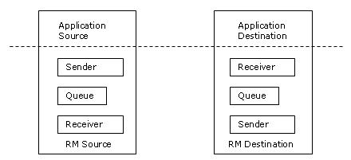
Figure 2: High Level Architecture of Apache Sandesha
This architecture provides a complete support for both synchronous and asynchronous messaging scenarios. WS-Addressing [3] provides the information for the correlation of messages when the asynchronous pattern is adopted. However with the use of two way transports (like HTTP), there is a possibility that the Acknowledgements for the requests to be sent using the same connection. As shown using the dotted lines) So the sender in both the sides should be able to handle that accordingly.
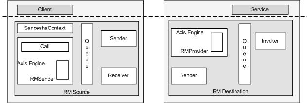
Figure 3: Sandesha Architecture on top of Apache Axis
The individual components and the message paths in the above diagram can be described in more detailed as follows.
This is the program that invokes (utilize) the web service. According to the high-level architecture this is the Application Source.
This is the apache Axis. Axis is essentially a SOAP engine a framework for constructing SOAP processors such as clients, servers, gateways, etc.
This is the transport sender that the user should use in order to enable reliability in the client side Axis Engine. However RMSender will not directly write the request to the transport layer, instead it will insert the request to a Queue.
This is the persistence layer for Sandesha. Currently the solution for reliability is achieved using an in-memory Queue. But Sandesha provides an extensible storage manager for the storage and hence replacing the Queue with a database is fairly easy. Although the Queue acts as a single component, it will maintain two Queues for incoming and out going messages internally.
This is a running thread to send the request
messages. Sandesha uses the same sender in the server side to send the responses
(if any) to the client asynchronously.
When the Sender sends a request using by directional transport protocol (e.g.
HTTP) there is a possibility (when the <wsa:From> [3] address is set to the
anonymous URI [3]) that the receiver sends the acknowledgment using the same
connection. However, it should be noted that Sandesha is not expecting any
application responses over the same connection.
This is the listener for the client side and it is the SimpleAxisServer that is used as the receiver for Sandesha. The functionality of the Receiver is to accept the asynchronous SOAP messages and to insert them to the Queue according to the correlation information present in the message itself.
This is the provider used by Sandesha inside the Axis engine in the server side. RMProvider will identify the incoming message and insert the required message or messages to the Queue. It will also generate messages for Reliable Messaging specific messages such as <wsrm:AckRequested>, see [3].
This is a runnable component that actually handles the dispatching of the web service request to the actual service. RMInvoker will also put the service response (if any) to the Queue present in the server side.
This is the actual web service, which will be the Application Destination according to the high-level architecture.
Following diagram describes the class structure of the Sandesha server.
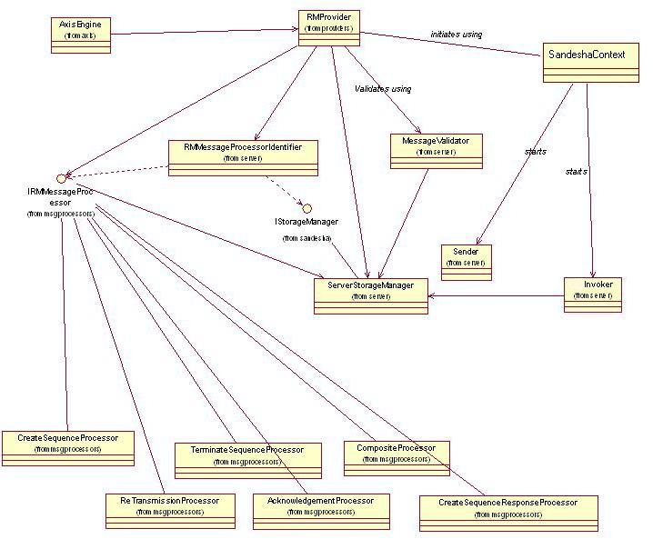
This diagram describes the class structure of Sandesha Client.
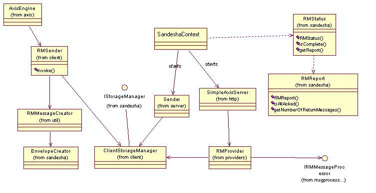
Following describes the sandesha storage classes. Currently we use a temporary queue to hold messages in memory. We have added the ServerDatabaseDAO class for adding persistant storage support for Sandesh in the future.
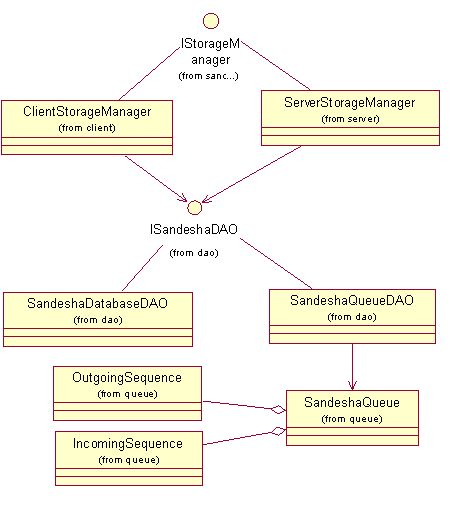
There are many messaging scenarios that can be used to consume web services. These combinations are created mainly by the usage of the WS-Addressing headers and the MEPs of the service. Following sequence diagrams will explain some of the possible combinations.
In this scenario, client makes a service request to a service with one way operation. Client has specified that the operations are synchronous in nature. So the RMSource will include the anonymous URI for the <wsa:From> EPR of the out going messages. So the sequence acknowledgement will come only on the same connection.
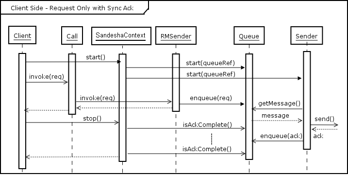
Figure 4: Client Side - Request Only with Synchronous Acknowledgement
This is happening only at the first message of a particular sequence. Web service client should initialize the reliable messaging environment before sending messages. This can be done by creating a SandeshaContext and adding a new sequence to it. This will Initialize the Queue, Sender and the Client side receiver.

Figure 5: Client Side - Initialization
This is happening only after the last message of a particular sequence. Web service client should terminate the RM Environment after receiving all the messages. This can be done by calling the method ctx.endSequence(call) in the SandeshaContext class. This will first check whether all the sequence are complete with acknowledgements and then terminate the Queue, Sender and the Client side receiver passing control back to the client.
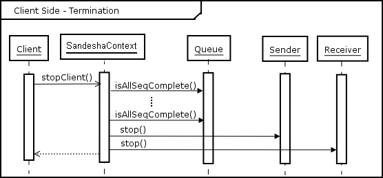
Figure 6: Client Side - Termination
In this scenario client invoke a web service with one-way operation. When sending the service requests the RMSource will include the client side endpoint reference in the <wsa:From> address. So the sequence acknowledgements will be sent through a new connection other than the one use for the request.
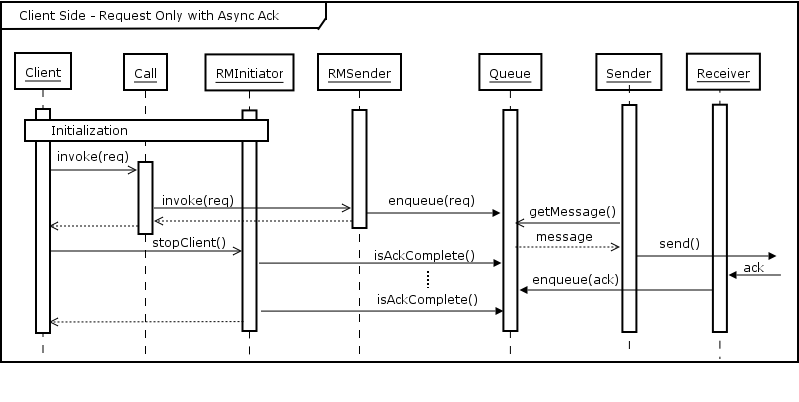
Figure 7: Client Side - Request Only with Asynchronous Acknowledgement
In this scenario client invoke a web service with two-way operation. When sending the service requests the RMSource will include the anonymous URI in the <wsa:From> address. So the sequence acknowledgements will be sent through the same one use for the request (note that; this can only be used with two way transports).
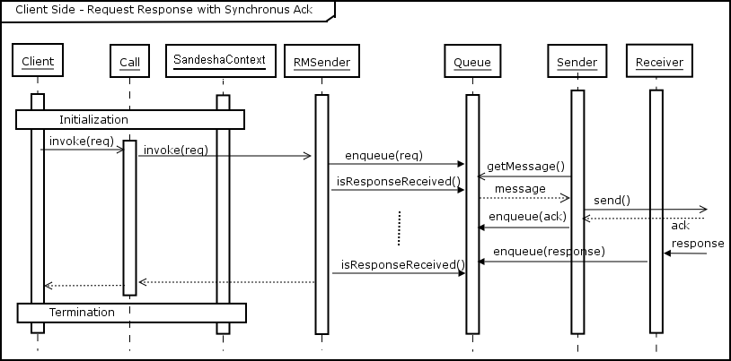
Figure 8: Client Side - Request Response with Synchronous Acknowledgement
In this scenario client invoke a web service with two-way operation. When sending the service requests the RMSource will include the client side endpoint reference in the <wsa:From> End Point Reference (EPR) and also in the <wsa:ReplyTo> EPR. So the sequence acknowledgements will be sent through a new connection other than the one use for the request. Service response will be received by the client in a new sequence. Sending service response is similar to sending a request in the client side. A separate sequence is created by the server (if the client has not offered a sequence).
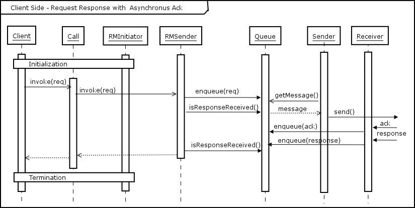
Figure 9: Client Side - Request Response with Asynchronous Acknowledgement
This sequence diagram will illustrate the sequence of operations that will be executed when the RMDestination receives a One-way service request. Sequence Acknowledgement is sent using the same connection.
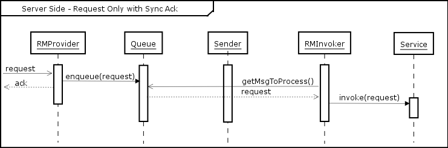
Figure 10: Server Side - Request Only with Synchronous Acknowledgement
This sequence diagram will illustrate the sequence of operations that will be executed when the RMDestination receives a One-way service request. Sequence Acknowledgement is sent using a separate connection. This will happen only if the <wsa:From> End Point Reference (EPR) is not anonymous URI.
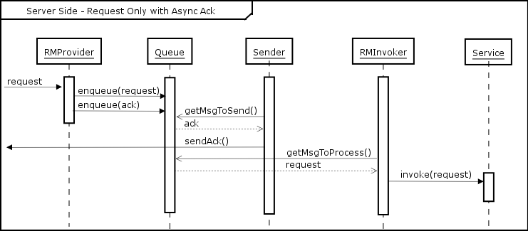
Figure 10: Server Side - Request Only with Asynchronous Acknowledgement
In this scenario, the RMDestination will receive a service request for an operation of request/response in nature. The incoming message has anonymous URI for the <wsa:From> EPR and a non-anonymous EPR for <wsa:ReplyTo>, hence the acknowledgement is sent using the same connection with which the service request has sent while the service response is sent using a different connection.
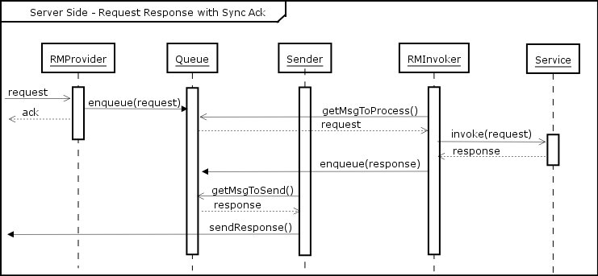
Figure 11: Server Side - Request Response with Synchronous Acknowledgement
In this scenario, the RMDestination will receive a service request for an operation of request/response in nature. The incoming message has non-anonymous EPR for the <wsa:From> EPR and a non-anonymous EPR for <wsa:ReplyTo>, hence the acknowledgement is sent using the same connection with which the service request has sent while the service response is sent using a different connection.

Figure 12: Server Side - Request Response with Asynchronous Acknowledgement
Sandesha implements the WS-ReliableMessaging protocol on top of Apache Axis. This has enabled the Axis community to perform web service invocations reliably not only with Axis itself but also with other web service platforms like Microsoft .NET which implements the above protocol. Currently Sandesha does not provide the persistence with respect to software component failures. This can be achieved using a database as the storage for SOAP messages instead of an in-memory Queue. The future developments will mainly focus on this area and also to implement Sandesha on top of Apache Axis 2, which is the new version of Axis still under development.
1. WS-RelliableMessaging protocol, available at
ftp://www6.software.ibm.com/software/developer/library/ws-reliablemessaging200502.pdf
2. Apache Axis Architecture, available at http://ws.apache.org/Axis/java/architecture-guide.html
3. WS-Addressing specification, available at
http://www.w3.org/Submission/2004/SUBM-ws-addressing-20040810/